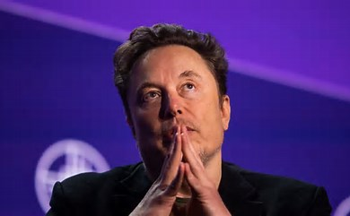

Bill Gates
Co-founding of Microsoft
William Henry Gates III (born October 28, 1955) is an American businessman, investor, philanthropist, and writer best known for co-founding the software company Microsoft with his childhood friend Paul Allen. During his career at Microsoft, Gates held the positions of chairman, chief executive officer (CEO), president, and chief software architect. He was a pioneer of the microcomputer revolution of the 1970s and 1980s.

Steve Jobs
chairman and CEO of Apple
Steven Paul Jobs (February 24,1955-October 5, 2011) was an American businessman, Co-founder, investor best known for co-founding the technology giant Apple. Jobs was also the founder of NeXT and chairman and majority shareholder of Pixar.Jobs was born in San Francisco in 1955. He was personal computer revolution of the 1970s and 1980s and Jobs was born in San Francisco in 1955 and adopted shortly afterwards. fellow Apple co-founder Steve Wozniak.

Elon Musk
CEO and product architect of Tesla
Elon Reeve Musk (/ˈiːlɒn/; born June 28, 1971) is a businessman and investor known for his key roles in space company SpaceX and automotive company Tesla, Inc. Other involvements include ownership of X Corp., formerly Twitter, and his role in the founding of The Boring Company, xAI, Neuralink and OpenAI. He is one of the wealthiest people in the world; as of June 2024, Forbes estimates his net worth to be US$210 billion.

Ola Kaellenius
Chairman and CEO of Mercedes-Benz
Sten Ola Källenius (born 11 June 1969) is a Swedish-German business executive. He is the chairman of the board of management of Mercedes-Benz Group, and CEO of Mercedes-Benz. He was the first non-German in both positions before he took up German citizenship. In 2010, he took over the chairmanship of the management of Mercedes-AMG GmbH, which he relinquished to Tobias Moers on 1 October 2013.

Gernot Döllner
CEO of AUDI AG.
Gernot Döllner (born in 1969) is a German engineer, business executive, and CEO of AUDI AG. Additionally, he is a member of the Board of Management of the Volkswagen Group. He heads the Progressive Brand Group, which includes Audi, Bentley, Lamborghini, and Ducati. Previously, He served as Secretary-General of the Volkswagen Group. Döllner began his career at the Volkswagen Group in Wolfsburg. In 1998, he joined Porsche in Stuttgart.

Pablo Di Si
President and CEO of Volkswagen
Pablo Di Si was appointed President and CEO, Volkswagen Group of America, and CEO, Volkswagen North American Region, effective Sept. 1, 2022. He is responsible for the Group‘s growth strategy in the U.S., with a portfolio of more than 25 EV models planned by 2030. He assumes leadership for the 20,000+ employees across the region who are helping seize the historic market opportunities across the U.S., Mexico, and Canada.